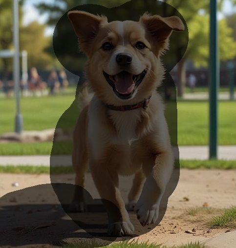
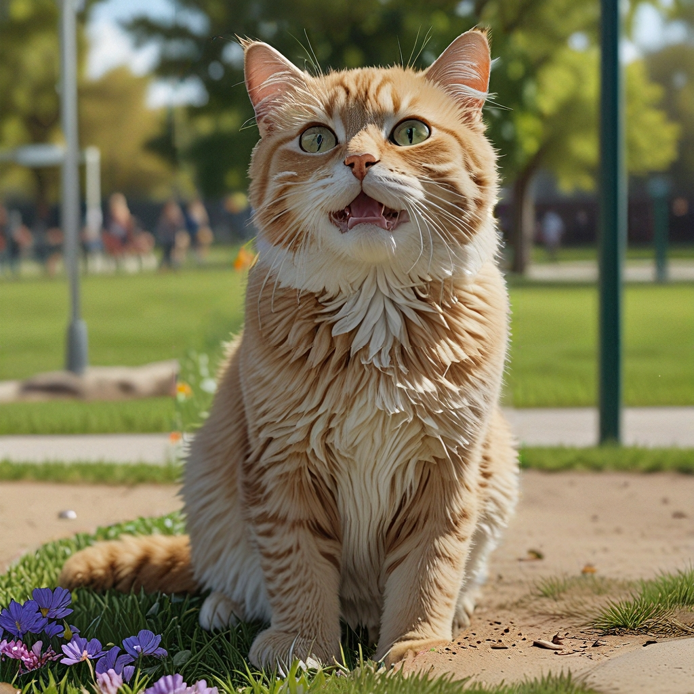

পুনঃরং বৈশিষ্ট্য টিপস
AiCasso-তে ইনপেইন্ট বৈশিষ্ট্য ব্যবহার করে আপনি একটি ছবির নির্দিষ্ট অংশ পরিবর্তন করতে পারেন, পূরণ বা প্রতিস্থাপন করে। আপনি যদি একটি বিদ্যমান ছবিকে উন্নত করতে চান বা সম্পূর্ণরূপে কিছু অংশ পরিবর্তন করতে চান, AiCasso প্রক্রিয়াটি সহজ করে তোলে। আপনি যে অংশগুলি পরিবর্তন করতে চান সেগুলি নির্বাচন করুন, একটি প্রম্পট দিন এবং AiCasso-কে তার জাদু করতে দিন।
বিকল্প:
শক্তি:
শক্তি বিকল্পটি নিয়ন্ত্রণ করে যে প্রম্পট দ্বারা মূল ছবির কতটা পরিবর্তন হয়। এটি 0 থেকে 1 এর মধ্যে থাকে। 0 মানে মূল ছবি সামান্য পরিবর্তিত হয়, যখন 1 মানে মূল ছবি প্রায় সম্পূর্ণরূপে নতুন বিবরণ দ্বারা প্রতিস্থাপিত হয়। এটি ভাবুন আপনার পরিবর্তনগুলি কতটা 'শক্তিশালী' হবে।
শৈলী উন্নত করুন:
শৈলী উন্নত করার বিকল্পটি আপনাকে পরিবর্তিত অংশগুলিতে একটি নির্দিষ্ট শিল্প বা থিম্যাটিক শৈলী যোগ করতে দেয়। আপনি বিভিন্ন শৈলীর মধ্যে থেকে নির্বাচন করতে পারেন যেমন:
কিভাবে কাজ করে:
যে এলাকাগুলি পূরণ বা প্রতিস্থাপন করতে হবে তা আঁকুন:

উদাহরণ:
প্রম্পট ১: "পার্কে একটি বিড়ালের হাইপার-রিয়ালিস্টিক ছবি।"
ফলাফল: AiCasso একটি হাইপার-রিয়ালিস্টিক বিড়াল তৈরি করবে, আঁকা অংশগুলিকে বাস্তবসম্মত টেক্সচার এবং আলো দিয়ে নিখুঁতভাবে পূরণ করবে।
প্রম্পট ২: "পার্কে একটি বিড়াল হাইপার-রিয়ালিস্টিক শৈলী এবং 0.7 শক্তি সহ।"

ফলাফল: এটি একটি হাইপার-রিয়ালিস্টিক বিড়াল তৈরি করবে, যেখানে পরিবর্তনের শক্তি 0.7 এ সেট করা হয়েছে, নতুন উপাদানগুলি মূল ছবির সাথে মসৃণভাবে মিশে যাবে।
শৈলী উন্নত করুন
কোন শৈলী নির্বাচন করবেন তা নিশ্চিত নন? চিন্তা করবেন না! যে কোনও শৈলী উল্লেখ করুন যা আপনার মনে আসে, এমনকি যদি এটি ব্যাকরণগতভাবে সঠিক না হয়, AiCasso উপলব্ধ শৈলীর তালিকা থেকে এটি বের করে নেবে।
- ডিফল্ট: কোনও নির্দিষ্ট শিল্প প্রভাব ছাড়াই একটি সুষম এবং নিরপেক্ষ শৈলী।
- উন্নত করুন: সামান্য বিস্তারিত এবং সামগ্রিক নান্দনিকতা উন্নত করে।
- সিনেমাটিক ডিভা: শক্তিশালী আলো কনট্রাস্ট সহ নাটকীয়, সিনেমার মতো প্রভাব যোগ করে।
- অ্যাবস্ট্রাক্ট এক্সপ্রেশনিজম: বিমূর্ত আকার এবং উজ্জ্বল রঙের ছিটে জোর দেয়।
- একাডেমিয়া: ছবিতে একটি পণ্ডিত এবং ক্লাসিকাল স্পর্শ যোগ করে।
- অ্যাকশন ফিগার: অ্যাকশন ফিগারের অতিরঞ্জিত এবং গতিশীল শৈলীতে ছবি তৈরি করে।
- আকর্ষণীয় 3D চরিত্র: কিউট, কার্টুনিশ 3D চরিত্র তৈরি করে।
- আকর্ষণীয় কাওয়াই: কাওয়াই সংস্কৃতির সাধারণ এবং আকর্ষণীয় শৈলীতে জোর দেয়।
- আর্ট ডেকো: আর্ট ডেকো যুগের জ্যামিতিক এবং অলংকারিক শৈলী ব্যবহার করে।
- আর্ট নুভো: প্রবাহিত রেখা এবং প্রকৃতি-অনুপ্রাণিত উপাদান যোগ করে, যা আর্ট নুভোর সাধারণ।
- অ্যাস্ট্রাল অর: একটি রহস্যময় এবং অন্য-জাগতিক পরিবেশ তৈরি করে।
- অভান্ত গার্ড: উদ্ভাবনী এবং পরীক্ষামূলক শিল্প প্রকাশনার উপর জোর দেয়।
- বারোক: বারোক যুগের নাটকীয়, বিস্তারিত এবং জটিল শৈলী ব্যবহার করে।
- বাউহাউস শৈলী পোস্টার: বাউহাউসের ন্যূনতম এবং কার্যকরী ডিজাইন নীতিগুলি প্রতিফলিত করে।
- ব্লুপ্রিন্ট স্কিম্যাটিক ড্রয়িং: প্রযুক্তিগত ব্লুপ্রিন্টের মতো ছবি তৈরি করে।
- কারিকেচার: অতিরঞ্জিত, কার্টুনিশ পোর্ট্রেট তৈরি করে।
- সেল-শেডেড আর্ট: সেল-শেডেড অ্যানিমেশনের সাধারণ সমতল, উজ্জ্বল রঙ ব্যবহার করে।
- চরিত্র ডিজাইন শীট: অ্যানিমেশনের জন্য উপযুক্ত পরিষ্কার এবং স্পষ্ট চরিত্র ডিজাইনগুলিতে ফোকাস করে।
- ক্লাসিসিজম আর্ট: ক্লাসিকাল প্রাচীনতার পরিশীলিত এবং আদর্শিত শিল্প শৈলী অনুকরণ করে।
- কালার ফিল্ড পেইন্টিং: রঙের একটি সমতল প্লেন তৈরি করতে একক রঙের বড় এলাকা বৈশিষ্ট্যযুক্ত।
- কালারড পেন্সিল আর্ট: রঙিন পেন্সিলের অঙ্কনের টেক্সচার এবং চেহারা অনুকরণ করে।
- কনসেপ্টুয়াল আর্ট: নান্দনিক বা সামগ্রীগত উদ্বেগের চেয়ে ধারণা এবং ধারণাগুলিকে অগ্রাধিকার দেয়।
- কনস্ট্রাকটিভিজম: কনস্ট্রাকটিভিস্ট আন্দোলনের শিল্প, জ্যামিতিক শৈলী প্রতিফলিত করে।
- কিউবিজম: বস্তুকে জ্যামিতিক আকারে ভেঙে দেয় এবং বিমূর্ত আকারে উপস্থাপন করে।
- ডাডাইজম: অযৌক্তিকতা, অযৌক্তিকতা এবং অ্যান্টি-আর্ট নান্দনিকতার উপর জোর দেয়।
- ডার্ক ফ্যান্টাসি: অন্ধকার এবং ভুতুড়ে উপাদানগুলির সাথে একটি মুডি, গথিক পরিবেশ তৈরি করে।
- ডার্ক মুডি অ্যাটমোস্ফিয়ার: একটি মুডি পরিবেশ তৈরি করতে কম আলো এবং ছায়া ব্যবহার করে।
- DMT আর্ট: DMT অভিজ্ঞতার দ্বারা অনুপ্রাণিত উজ্জ্বল, সাইকেডেলিক ভিজ্যুয়াল বৈশিষ্ট্যযুক্ত।
- ডুডল আর্ট: প্রায়শই জটিল এবং বিস্তারিত, whimsical এবং খেলাধুলার অঙ্কন শৈলীতে জোর দেয়।
- ডাবল এক্সপোজার: দুটি ছবিকে একটিতে একত্রিত করে, একটি অদ্ভুত, স্তরিত প্রভাব তৈরি করে।
- ড্রিপিং পেইন্ট স্প্ল্যাটার: গতিশীল এবং বিশৃঙ্খল রচনার জন্য ছিটানো এবং ড্রিপিং পেইন্ট ব্যবহার করে।
- এক্সপ্রেশনিজম: বাস্তবসম্মত উপস্থাপনার চেয়ে আবেগের প্রকাশকে অগ্রাধিকার দেয়, প্রায়শই উজ্জ্বল রঙ এবং নাটকীয় আকার ব্যবহার করে।
- ফেড পোলারয়েড ফটো: একটি ফেড পোলারয়েড ছবির পুরনো এবং নস্টালজিক চেহারা অনুকরণ করে।
- ফাউভিজম: ফাউভিস্ট আন্দোলনের দ্বারা অনুপ্রাণিত উজ্জ্বল, অস্বাভাবিক রঙ এবং সাহসী ব্রাশওয়ার্ক ব্যবহার করে।
- ফ্ল্যাট 2D: সাধারণ, সমতল ডিজাইনগুলিতে জোর দেয়, প্রায়শই কার্টুন শৈলীতে।
- ফোর্টনাইট শৈলী: ফোর্টনাইট ভিডিও গেমের সাধারণ উজ্জ্বল, কার্টুনিশ শিল্প শৈলী প্রতিফলিত করে।
- ফিউচারিজম: গতিশীল আন্দোলন, শক্তি এবং ভবিষ্যতের প্রযুক্তির চিত্রায়নের উপর জোর দেয়।
- গ্লিচকোর: একটি শিল্প শৈলী হিসাবে ডিজিটাল ত্রুটি এবং গ্লিচগুলিকে জোর দেয়, প্রায়শই বিকৃত ভিজ্যুয়াল সহ।
- গ্লো-ফাই: একটি স্বপ্নময়, আধ্যাত্মিক পরিবেশ তৈরি করতে নরম, উজ্জ্বল আলো ব্যবহার করে।
- গুগি শৈলী: 20 শতকের মাঝামাঝি সময়ের ভবিষ্যত এবং স্পেস এজ ডিজাইন প্রবণতাগুলি প্রতিফলিত করে।
- গ্রাফিতি আর্ট: গ্রাফিতি এবং নগর মুরালের সাধারণ উজ্জ্বল, রাস্তার শৈলী নান্দনিকতা ব্যবহার করে।
- হারলেম রেনেসাঁ আর্ট: হারলেম রেনেসাঁর সমৃদ্ধ সাংস্কৃতিক এবং শিল্প প্রকাশনার প্রতিফলন করে।
- হাই ফ্যাশন: উচ্চ ফ্যাশনের স্লিক, জটিল এবং অভান্ত গার্ড নান্দনিকতার উপর জোর দেয়।
- আইডিলিক: একটি শান্ত, প্রশান্ত এবং প্রায়শই পাস্টোরাল পরিবেশ তৈরি করে।
- ইমপ্রেশনিজম: আলো এবং পরিবেশের প্রভাবগুলি ক্যাপচার করতে ঢিলা ব্রাশওয়ার্ক এবং উজ্জ্বল রঙ ব্যবহার করে।
- ইনফোগ্রাফিক ড্রয়িং: তথ্য গ্রাফিক্যালভাবে উপস্থাপনের জন্য পরিষ্কার, দৃশ্যমানভাবে আকর্ষণীয় লেআউটগুলিতে জোর দেয়।
- ইঙ্ক ড্রিপিং ড্রয়িং: একটি অঙ্কনে তরল, ড্রিপিং প্রভাব তৈরি করতে কালি ব্যবহার করে।
- জাপানি ইনক ড্রয়িং: জাপানি কালি শিল্পের ঐতিহ্যগত ব্রাশস্ট্রোক প্রযুক্তি এবং নান্দনিকতা অনুকরণ করে।
- নোলিং ফটোগ্রাফি: বস্তুগুলির পরিষ্কার এবং সংগঠিত বিন্যাসে জোর দেয়, প্রায়শই উপরে থেকে ফটোগ্রাফ করা হয়।
- লাইট চেরি অ্যাটমোস্ফিয়ার: উজ্জ্বল রঙ এবং আলো ব্যবহার করে একটি আনন্দময় এবং উত্সাহজনক পরিবেশ তৈরি করে।
- লোগো ডিজাইন: পরিচ্ছন্ন, স্বীকৃত লোগো এবং ব্র্যান্ডিং উপাদান তৈরি করতে ফোকাস করে।
- লাক্সারিয়াস এলিগেন্স: জটিলতা এবং বিলাসিতার উপর জোর দেয়, প্রায়শই সমৃদ্ধ টেক্সচার এবং উপকরণ সহ।
- ম্যাক্রো ফটোগ্রাফি: চরম ক্লোজ-আপগুলিতে ফোকাস করে, প্রায়শই নগ্ন চোখে দৃশ্যমান নয় এমন জটিল বিশদ প্রকাশ করে।
- ম্যান্ডালা আর্ট: ঐতিহ্যগত ম্যান্ডালা ডিজাইন দ্বারা অনুপ্রাণিত জটিল, সিমেট্রিকাল প্যাটার্ন তৈরি করে।
- মার্কার ড্রয়িং: মার্কার অঙ্কনের সাধারণ সাহসী, উজ্জ্বল রেখা এবং রঙ অনুকরণ করে।
- মধ্যযুগীয়তা: মধ্যযুগীয় সময়ের শিল্প এবং ডিজাইন নান্দনিকতার প্রতিফলন করে।
- মিনিমালিজম: সরলতা এবং আকারগুলিকে তাদের মৌলিক উপাদানগুলিতে হ্রাসের উপর জোর দেয়।
- নিও-বারোক: আধুনিক প্রভাব সহ বারোক যুগের বিলাসবহুল, নাটকীয় শৈলী পুনরুজ্জীবিত করে।
- নিও-বাইজান্টাইন: বাইজেন্টাইন সাম্রাজ্যের অলঙ্কৃত, ধর্মীয় শিল্প শৈলীকে আধুনিক উপাদানের সাথে সংমিশ্রণ করে।
- নিও-ফিউচারিজম: ভবিষ্যত ডিজাইনগুলির উপর ফোকাস করে, প্রায়শই স্লিক, উচ্চ-প্রযুক্তির নান্দনিকতার সাথে।
- নিও-ইমপ্রেশনিজম: ছোট, স্বতন্ত্র রঙের ডট ব্যবহার করে চিত্র তৈরি করে, নিও-ইমপ্রেশনিস্ট আন্দোলন দ্বারা অনুপ্রাণিত।
- নিও-রোকোকো: আধুনিক মোড় সহ রোকোকো যুগের জটিল, অলংকারিক শৈলী পুনরুজ্জীবিত করে।
- নিওক্লাসিসিজম: ক্লাসিকাল প্রাচীনতার শিল্প এবং ডিজাইন নান্দনিকতা অনুকরণ করে, সঙ্গতি এবং সরলতার উপর জোর দেয়।
- অপ আর্ট: জ্যামিতিক প্যাটার্ন এবং কনট্রাস্টের ব্যবহার করে অপটিক্যাল বিভ্রম এবং প্রভাব তৈরি করে।
- অর্নেট এবং জটিল: অলংকারের উপর জোর দিয়ে অত্যন্ত বিস্তারিত, জটিল ডিজাইনগুলিতে ফোকাস করে।
- পেন্সিল স্কেচ ড্রয়িং: পেন্সিল স্কেচের টেক্সচার এবং চেহারা অনুকরণ করে।
- পপ আর্ট: জনপ্রিয় সংস্কৃতি এবং গণমাধ্যম দ্বারা অনুপ্রাণিত সাহসী রঙ এবং চিত্র ব্যবহার করে।
- রোকোকো: রোকোকো যুগের জটিল, অলংকারিক শিল্প শৈলী প্রতিফলিত করে, হালকাতা এবং শৈলীর উপর জোর দিয়ে।
- সিলুয়েট আর্ট: শক্তিশালী আলো এবং ছায়ার মধ্যে কনট্রাস্ট ব্যবহার করে সাহসী, সিলুয়েট-ভিত্তিক চিত্র তৈরি করে।
- সিম্পল ভেক্টর আর্ট: পরিষ্কার, জ্যামিতিক আকার এবং সমতল রঙের উপর জোর দেয়, যা ভেক্টর আর্টের সাধারণ।
- স্কেচআপ: স্কেচআপ সফটওয়্যার ব্যবহার করে তৈরি 3D মডেলের চেহারা এবং অনুভূতি অনুকরণ করে।
- স্টিমপাঙ্ক: ভিক্টোরিয়ান যুগের নান্দনিকতা এবং স্টিম-পাওয়ার প্রযুক্তির সংমিশ্রণ করে, একটি রেট্রো-ফিউচারিস্টিক শৈলী তৈরি করে।
- সাররিয়ালিজম: বাস্তবতা এবং স্বপ্নের মতো চিত্রগুলিকে মিশ্রিত করে অদ্ভুত, কল্পনাপ্রবণ দৃশ্য তৈরি করে।
- সুপ্রিমাটিজম: মৌলিক জ্যামিতিক আকার এবং সীমিত রঙের প্যালেটের উপর জোর দেয়, সুপ্রিমাটিস্ট আন্দোলন দ্বারা অনুপ্রাণিত।
- টারাজেন: টেরাজেন সফটওয়্যার ব্যবহার করে তৈরি বাস্তবসম্মত, কম্পিউটার-উৎপন্ন দৃশ্যপটের অনুকরণ করে।
- ট্রাঙ্কুইল রিল্যাক্সিং অ্যাটমোস্ফিয়ার: একটি শান্ত এবং প্রশান্ত পরিবেশ তৈরি করতে নরম রঙ এবং শান্তিপূর্ণ চিত্র ব্যবহার করে।
- স্টিকার ডিজাইন: স্টিকারগুলির জন্য উপযুক্ত খেলাধুলার, কার্টুনিশ চিত্র তৈরি করতে ফোকাস করে।
- ভাইব্রেন্ট রিম লাইট: বিষয়গুলির চারপাশে উজ্জ্বল, রিম লাইটিংকে জোর দেয় একটি আকর্ষণীয়, উজ্জ্বল প্রভাব তৈরি করতে।
- ভলিউমেট্রিক লাইটিং: গভীরতা এবং মাত্রা তৈরি করতে আলোর রশ্মি এবং বায়ুমণ্ডলীয় প্রভাব ব্যবহার করে।
- ওয়াটারকালার: জলরঙের ছবির নরম, প্রবাহিত টেক্সচার অনুকরণ করে।
- হুইমসিক্যাল এবং প্লে ফুল: হালকা, কল্পনাপ্রবণ এবং প্রায়শই অদ্ভুত চিত্রগুলিতে ফোকাস করে।
- শার্প: একটি পরিষ্কার চেহারা জন্য স্পষ্টতা এবং প্রান্ত সংজ্ঞা উন্নত করে।
- মাস্টারপিস: উচ্চ-মানের, বিস্তারিত এবং পালিশ করা শিল্প আউটপুটে জোর দেয়।
- ফটোগ্রাফ: একটি বাস্তবসম্মত এবং জীবন্ত ফটোগ্রাফিক গুণমানের জন্য লক্ষ্য করে।
- নেগেটিভ: একটি ফটোগ্রাফিক নেগেটিভ প্রভাব তৈরি করতে রঙগুলি বিপরীত করে।
- অ্যাডস - বিজ্ঞাপন: বিজ্ঞাপনের জন্য উপযুক্ত পরিষ্কার, পেশাদার ভিজ্যুয়ালগুলিতে ফোকাস করে।
- অ্যাডস - অটোমোটিভ: গতিশীল এবং পালিশ করা অটোমোটিভ বিজ্ঞাপনের জন্য ভিজ্যুয়াল শৈলী তৈরি করে।
- অ্যাডস - কর্পোরেট: কর্পোরেট সেটিংসের জন্য উপযুক্ত স্লিক, পেশাদার ডিজাইনে জোর দেয়।
- অ্যাডস - ফ্যাশন সম্পাদকীয়: ফ্যাশন সম্পাদকীয়তে ব্যবহৃত স্টাইলিশ, উচ্চ-ফ্যাশন চেহারাকে হাইলাইট করে।
- অ্যাডস - খাদ্য ফটোগ্রাফি: খাদ্য ফটোগ্রাফির সাধারণ উজ্জ্বল এবং আকর্ষণীয় চেহারার জন্য চিত্রগুলি অপ্টিমাইজ করে।
- অ্যাডস - গৌরবময় খাদ্য ফটোগ্রাফি: গৌরবময় খাদ্য ফটোগ্রাফির সমৃদ্ধ, বিস্তারিত নান্দনিকতার উপর জোর দেয়।
- অ্যাডস - বিলাসিতা: বিলাসবহুল ব্র্যান্ডগুলির জন্য উপযুক্ত বিলাসবহুল, উচ্চ-শেষ শৈলীতে ফোকাস করে।
- অ্যাডস - রিয়েল এস্টেট: রিয়েল এস্টেট বিজ্ঞাপনের সাধারণ পরিষ্কার এবং আমন্ত্রণমূলক ভিজ্যুয়ালগুলিকে হাইলাইট করে।
- অ্যাডস - খুচরা: খুচরা বিজ্ঞাপনের জন্য উপযুক্ত আকর্ষণীয়, ভোক্তা-কেন্দ্রিক শৈলীতে জোর দেয়।
- হাইপাররিয়ালিজম: একটি অত্যন্ত বিস্তারিত, জীবন-সদৃশ ভিজ্যুয়াল শৈলীর জন্য চেষ্টা করে।
- পয়েন্টিলিজম: একটি চিত্র তৈরি করতে ছোট, স্বতন্ত্র রঙের ডট ব্যবহার করে, পয়েন্টিলিস্ট আন্দোলন দ্বারা অনুপ্রাণিত।
- সাইকেডেলিক: সাইকেডেলিক শিল্প দ্বারা অনুপ্রাণিত উজ্জ্বল রঙ এবং অদ্ভুত ভিজ্যুয়ালগুলিতে জোর দেয়।
- রেনেসাঁ: রেনেসাঁ শিল্পের সঙ্গতিপূর্ণ, ক্লাসিকাল শৈলীর প্রতিফলন করে।
- টাইপোগ্রাফি: টেক্সট এবং ফন্টের সৃজনশীল এবং শিল্পসম্মত ব্যবহারের উপর ফোকাস করে।
- ফিউচারিস্টিক বায়োমেকানিক্যাল: একটি উচ্চ-প্রযুক্তির, জৈব শৈলী তৈরি করতে ভবিষ্যত এবং বায়োমেকানিক্যাল উপাদানগুলিকে সংমিশ্রণ করে।
- ফিউচারিস্টিক বায়োমেকানিক্যাল সাইবারপাঙ্ক: একটি গ্রীটি, ভবিষ্যত চেহারার জন্য বায়োমেকানিক্যাল এবং সাইবারপাঙ্ক নান্দনিকতার সংমিশ্রণ করে।
- ফিউচারিস্টিক সাইবারনেটিক: উচ্চ-প্রযুক্তির, সাইবারনেটিক ভিজ্যুয়ালের উপর ফোকাস করে।
- ফিউচারিস্টিক সাইবারনেটিক রোবট: একটি ভবিষ্যত প্রান্ত সহ রোবট এবং সাইবারনেটিক ডিজাইনগুলিতে জোর দেয়।
- ফিউচারিস্টিক সাইবারপাঙ্ক সিটিস্কেপ: সাইবারপাঙ্ক শিল্পের সাধারণ গ্রীটি, নেয়ন-লিট সিটিস্কেপগুলির প্রতিফলন করে।
- ফিউচারিস্টিক সাই-ফাই: ভবিষ্যত এবং বিজ্ঞান কল্পকাহিনী দ্বারা অনুপ্রাণিত নান্দনিকতার উপর ফোকাস করে।
- ফিউচারিস্টিক রেট্রো সাইবারপাঙ্ক: একটি নস্টালজিক কিন্তু ভবিষ্যত শৈলীর জন্য রেট্রো এবং সাইবারপাঙ্ক উপাদানগুলিকে সংমিশ্রণ করে।
- ফিউচারিস্টিক রেট্রো: ভবিষ্যত ভিজ্যুয়ালগুলিকে রেট্রো ডিজাইন উপাদানের সাথে সংমিশ্রণ করে।
- ফিউচারিস্টিক ভ্যাপরওয়েভ: ভ্যাপরওয়েভ শিল্পের সাধারণ নস্টালজিক, অদ্ভুত ভিজ্যুয়ালগুলিতে জোর দেয়।
- গেম বাবল: সাধারণ গেমগুলিতে প্রায়শই দেখা একটি খেলাধুলার, বাবলি নান্দনিকতার উপর ফোকাস করে।
- গেম সাইবারপাঙ্ক: গেম ডিজাইন উপাদানগুলিকে সাইবারপাঙ্ক নান্দনিকতার সাথে সংমিশ্রণ করে।
- গেম ফাইটিং: ফাইটিং গেমগুলির সাধারণ গতিশীল, তীব্র শৈলীর প্রতিফলন করে।
- গেম জিটিএ: গ্র্যান্ড থেফট অটো গেমগুলির সাধারণ গ্রীটি, নগর শৈলী অনুকরণ করে।
- গেম মারিও: মারিও গেমগুলির সাধারণ উজ্জ্বল, কার্টুনিশ শৈলীর উপর ফোকাস করে।
- গেম মাইনক্রাফট: মাইনক্রাফটের সাধারণ ব্লকী, পিক্সেলেটেড শৈলীর অনুকরণ করে।
- গেম পোকেমন: পোকেমন গেমগুলির সাধারণ উজ্জ্বল, অ্যানিমে-অনুপ্রাণিত শৈলীর প্রতিফলন করে।
- গেম রেট্রো আর্কেড: রেট্রো আর্কেড গেমগুলির সাধারণ নস্টালজিক, পিক্সেলেটেড শৈলীর উপর জোর দেয়।
- গেম আরপিজি ফ্যান্টাসি: আরপিজি গেমগুলির সাধারণ বিস্তারিত, কল্পনাপ্রবণ নান্দনিকতার প্রতিফলন করে।
- গেম স্ট্র্যাটেজি: স্ট্র্যাটেজি গেমগুলির সাধারণ পরিষ্কার, কার্যকরী ডিজাইনের উপর ফোকাস করে।
- গেম স্ট্রিটফাইটার: স্ট্রিট ফাইটার গেমগুলির সাধারণ সাহসী, গতিশীল শৈলীর অনুকরণ করে।
- গেম জেল্ডা: জেল্ডা গেমগুলির সাধারণ কল্পনাপ্রবণ শৈলীর প্রতিফলন করে।
- মিস্ক আর্কিটেকচারাল: পরিষ্কার, সঠিক আর্কিটেকচারাল রেন্ডারিংয়ে ফোকাস করে।
- মিস্ক ডিস্কো: ডিস্কো সংস্কৃতির সাধারণ উজ্জ্বল, নেয়ন-লিট নান্দনিকতার উপর জোর দেয়।
- মিস্ক ড্রিমস্কেপ: অদ্ভুত, স্বপ্নের মতো পরিবেশ তৈরি করে।
- মিস্ক ডিস্টোপিয়ান: ডিস্টোপিয়ান সেটিংসের সাধারণ গ্রীটি, নিষ্ঠুর ভিজ্যুয়ালের প্রতিফলন করে।
- মিস্ক ফেয়ারি টেল: পরী কাহিনীর সাধারণ whimsical, জাদুকরী উপাদানগুলিতে জোর দেয়।
- মিস্ক গথিক: গথিক শিল্প এবং স্থাপত্যের সাধারণ অন্ধকার, অলংকারিক শৈলীর প্রতিফলন করে।
- মিস্ক গ্রঞ্জ: গ্রঞ্জ সংস্কৃতির সাধারণ গ্রীটি, কাঁচা নান্দনিকতার উপর জোর দেয়।
- মিস্ক হরর: অন্ধকার, ভুতুড়ে, এবং অস্বস্তিকর ভিজ্যুয়ালের উপর ফোকাস করে।
- মিস্ক কাওয়াই: কাওয়াই সংস্কৃতির সাধারণ কিউট, আকর্ষণীয় শৈলীর প্রতিফলন করে।
- মিস্ক লাভক্রাফটিয়ান: লাভক্রাফটিয়ান কল্পকাহিনীর সাধারণ ভুতুড়ে, মহাজাগতিক ভয়াবহতার উপর জোর দেয়।
- মিস্ক ম্যাকাব্রে: অন্ধকার, মৃতদেহ এবং অস্বস্তিকর থিমগুলির উপর ফোকাস করে।
- মিস্ক মাঙ্গা: মাঙ্গার সাধারণ সাহসী, গতিশীল শৈলীর অনুকরণ করে।
- মিস্ক মেট্রোপলিস: আধুনিক মেট্রোপলিসের সাধারণ স্লিক, নগর নান্দনিকতার প্রতিফলন করে।
- মিস্ক মিনিমালিস্ট: সরলতা এবং আকারগুলিকে তাদের মৌলিক উপাদানগুলিতে হ্রাসের উপর জোর দেয়।
- মিস্ক মনোক্রোম: একটি একক রঙের বিভিন্ন ছায়ায় তৈরি চিত্রগুলির উপর ফোকাস করে।
- মিস্ক নটিক্যাল: নটিক্যাল থিমগুলির সাধারণ সামুদ্রিক-অনুপ্রাণিত নান্দনিকতার প্রতিফলন করে।
- মিস্ক স্পেস: স্থান সেটিংগুলির সাধারণ বিশাল, অন্য-জাগতিক ভিজ্যুয়ালের উপর জোর দেয়।
- মিস্ক স্টেইনড গ্লাস: স্টেইনড গ্লাস শিল্পের সাধারণ জটিল, রঙিন ডিজাইনগুলির অনুকরণ করে।
- মিস্ক টেকওয়্যার ফ্যাশন: টেকওয়্যার ফ্যাশনের সাধারণ ভবিষ্যত, কার্যকরী নান্দনিকতার উপর ফোকাস করে।
- মিস্ক ট্রাইবাল: উপজাতীয় শিল্পের সাধারণ সাহসী, সাংস্কৃতিক নান্দনিকতার প্রতিফলন করে।
- মিস্ক জেন্ট্যাঙ্গল: জেন্ট্যাঙ্গল শিল্পের সাধারণ জটিল, পুনরাবৃত্ত প্যাটার্নগুলিতে জোর দেয়।
- পেপারক্রাফট কলাজ: স্তরিত, টেক্সচারযুক্ত কলাজ তৈরি করতে কাটা কাগজ ব্যবহার করে।
- পেপারক্রাফট ফ্ল্যাট পেপারকাট: সমতল, কাটা কাগজের ডিজাইনগুলিতে জোর দেয়।
- পেপারক্রাফট কিরিগামি: কিরিগামির সাধারণ জটিল, ভাঁজ করা ডিজাইনগুলিতে ফোকাস করে।
- পেপারক্রাফট পেপার মাচে: টেক্সচারযুক্ত, ত্রিমাত্রিক আকার তৈরি করতে পেপার মাচে ব্যবহার করে।
- পেপারক্রাফট পেপার কুইলিং: কাগজ কুইলিংয়ের সাধারণ সূক্ষ্ম, রোল করা ডিজাইনগুলিতে জোর দেয়।
- পেপারক্রাফট পেপারকাট কলাজ: স্তরিত কলাজ তৈরি করতে কাটা কাগজের উপাদানগুলি সংমিশ্রণ করে।
- পেপারক্রাফট পেপারকাট শ্যাডো বক্স: ত্রিমাত্রিক শ্যাডো বক্স তৈরি করতে স্তরিত পেপারকাট ব্যবহার করে।
- পেপারক্রাফট স্ট্যাকড পেপারকাট: স্তরিত, স্ট্যাকড কাগজের ডিজাইনগুলিতে ফোকাস করে।
- পেপারক্রাফট থিক লেয়ারড পেপারকাট: মোটা পেপারকাট ডিজাইনগুলির সাধারণ মাত্রিক, স্তরিত চেহারায় জোর দেয়।
- ফটো এলিয়েন: অদ্ভুত, বিদেশী ভিজ্যুয়ালের উপর ফোকাস করে।
- ফটো ফিল্ম নোয়ার: ফিল্ম নোয়ার-এর সাধারণ অন্ধকার, মুডি নান্দনিকতার উপর জোর দেয়।
- ফটো গ্ল্যামার: গ্ল্যামার ফটোগ্রাফির সাধারণ পালিশ করা, স্টাইলিশ চেহারাকে হাইলাইট করে।
- ফটো HDR: একটি বিস্তৃত আলো এবং রঙের পরিসীমা তৈরি করতে উচ্চ গতিশীল পরিসর (HDR) ব্যবহার করে।
- ফটো আইফোন ফটোগ্রাফিক: আইফোন ফটোগ্রাফির সাধারণ পরিষ্কার, আধুনিক শৈলীর অনুকরণ করে।
- ফটো লং এক্সপোজার: গতিশীল, মুভমেন্ট-ব্লার প্রভাব তৈরি করতে দীর্ঘ এক্সপোজার ব্যবহার করে।
- ফটো নেয়ন নোয়ার: নেয়ন আলো এবং নোয়ার-এর অন্ধকার, মুডি নান্দনিকতার সংমিশ্রণ করে।
- ফটো সিলুয়েট: সিলুয়েট-ভিত্তিক চিত্র তৈরি করতে আলো এবং ছায়ার মধ্যে শক্তিশালী কনট্রাস্টে ফোকাস করে।
- ফটো টিল্ট শিফট: একটি মিনি, খেলনা-জাতীয় চেহারা তৈরি করতে টিল্ট-শিফট প্রভাব ব্যবহার করে।
- 3D মডেল: 3D মডেলের সাধারণ পরিষ্কার, বিস্তারিত চেহারার উপর ফোকাস করে।
- অ্যানালগ ফিল্ম: অ্যানালগ ফিল্ম ফটোগ্রাফির সাধারণ দানা, টেক্সচারযুক্ত চেহারার অনুকরণ করে।
- অ্যানিমে: অ্যানিমের সাধারণ উজ্জ্বল, গতিশীল শৈলীর উপর জোর দেয়।
- সিনেমাটিক: শক্তিশালী আলো এবং রচনার সাথে একটি নাটকীয়, সিনেমার মতো প্রভাব তৈরি করে।
- কমিক বুক: কমিক বুক শিল্পের সাধারণ সাহসী রেখা এবং উজ্জ্বল রঙ ব্যবহার করে।
- ক্রাফট ক্লে: মাটির মডেলের সাধারণ টেক্সচারযুক্ত, হাতে তৈরি চেহারার অনুকরণ করে।
- ডিজিটাল আর্ট: পরিষ্কার, পালিশ করা ডিজিটাল শিল্পকর্মে ফোকাস করে।
- ফ্যান্টাসি আর্ট: ফ্যান্টাসি শিল্পের সাধারণ বিস্তারিত, কল্পনাপ্রবণ ভিজ্যুয়ালের উপর জোর দেয়।
- আইসোমেট্রিক: একটি ত্রিমাত্রিক চেহারা তৈরি করতে একটি আইসোমেট্রিক দৃষ্টিকোণ ব্যবহার করে।
- লাইন আর্ট: বিস্তারিত অঙ্কন তৈরি করতে পরিষ্কার, তীক্ষ্ণ রেখাগুলিতে ফোকাস করে।
- লো পলির: একটি ন্যূনতম, জ্যামিতিক চেহারা তৈরি করতে লো-পলিগন 3D মডেল ব্যবহার করে।
- নেওনপাঙ্ক: সাইবারপাঙ্কের গ্রীটি নান্দনিকতার সাথে নেয়ন আলোকে সংমিশ্রণ করে।
- অরিগামি: অরিগামির সাধারণ জটিল, ভাঁজ করা ডিজাইনগুলিতে ফোকাস করে।
- ফটোগ্রাফিক: বাস্তবসম্মত, জীবন-সদৃশ ভিজ্যুয়ালের জন্য লক্ষ্য করে।
- পিক্সেল আর্ট: একটি রেট্রো, ভিডিও গেম-অনুপ্রাণিত চেহারা তৈরি করতে পিক্সেলেটেড ডিজাইন ব্যবহার করে।
- টেক্সচার: দৃশ্যমান গভীরতা বাড়ানোর জন্য সমৃদ্ধ, বিস্তারিত টেক্সচারের উপর ফোকাস করে।